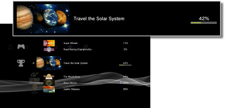

Juego > Colección de trofeos
Colección de trofeos
Puede obtener trofeos si cumple determinados objetivos en juegos compatibles con la función de trofeos.
Tipos de trofeos
Existen cuatro grados de trofeos. En general, los grados se basan en el nivel de dificultad de la obtención de los trofeos. Los tipos de trofeos disponibles y las condiciones que debe cumplir para obtenerlos varían según el juego.
Consulta de los trofeos obtenidos
1. |
Seleccione  |
|---|---|
2. |
Seleccione el juego que desee consultar.
|

Almacenamiento de la información de trofeos en el servidor PlayStation®Network
Si crea una cuenta PlayStation®Network, podrá guardar la información de trofeos obtenidos en el servidor PlayStation®Network. Asimismo, puede consultar los trofeos en la pantalla [Perfil] en  (Amigos) y comparar el estado de obtención de trofeos con el de sus amigos.
(Amigos) y comparar el estado de obtención de trofeos con el de sus amigos.
La información de trofeos se guarda automáticamente en el servidor PlayStation®Network en las condiciones siguientes:
- Si selecciona
 (Juego) >
(Juego) >  (Colección de trofeos) si ha iniciado sesión en PlayStation®Network
(Colección de trofeos) si ha iniciado sesión en PlayStation®Network - Si selecciona (Comparar trofeos) en la pantalla [Perfil] en (Amigos)
Nota
Asimismo, consulte (Amigos) > [Lista de amigos] > [Visualización de perfiles] en esta guía.